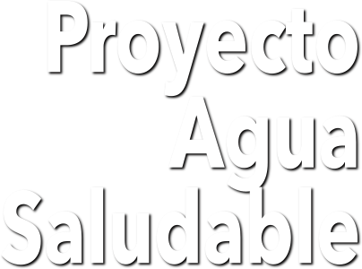

¿Por Qué el Proyecto Agua Saludable?
El proyecto Agua Saludable para la Laguna tiene como propósito el cumplimiento del artículo 4° de la Constitución de los Estados Unidos Mexicanos, que establece:
Toda persona tiene derecho al acceso, disposición y saneamiento de agua para consumo personal y doméstico en forma suficiente, salubre, aceptable y asequible.
Este proyecto comprende un conjunto de estructuras (Obra de Toma, Acueducto, Planta Potabilizadora y Tanques de Llegada) que son obras de infraestructura hidráulica para el suministro de agua potable destinadas a uso público-urbano en diversas localidades, principalmente de los municipios de Lerdo y Gómez Palacio, Durango.
Los sitios considerados responden a un análisis técnico, económico y ambiental. En donde se contemplaron diferentes alternativas de trazo y ubicación de obras, todo ello con un importante enfoque de reducción de impactos y aprovechamiento de oportunidades.
El desarrollo de estas obras es la mejor y más confiable alternativa para proporcionar agua potable a la población de los 9 principales municipios de la Comarca Lagunera, sustituyendo la fuente de extracción del recurso del acuífero "Principal-Región Lagunera" (clave 0523), por el agua del río Nazas.
Con esta acción disminuye la sobre explotación que se ejerce actualmente sobre este cuerpo de agua del cual se extrae principalmente el agua consumida por la población. Paralelamente se sigue proveyendo el recurso sin generar disconformidades sociales y altibajos en las actividades económicas como son la agricultura, ganadería y el sector lechero, el cual es característico en la economía de la zona lagunera.
Además el proyecto para operar correctamente requiere del aumento del caudal en el río Nazas, desde la cortina de la Presa Francisco Zarco hasta el sitio de la Obra de Toma, todo esto dentro del Parque Estatal Cañón de Fernández. Dicha acción beneficiará al margen del río debido a que el aumento en el volumen del efluente propicia y mejora las condiciones ribereñas con las que actualmente se cuentan. Favoreciendo la atracción de especies, así como el incremento en el número de especies florísticas y faunísticas existentes.
Los Municipios
Se planea que este proyecto genere beneficios a corto plazo a los municipios de Lerdo, Gómez Palacio y Torreón y a largo plazo a localidades pertenecientes a los municipios de Mapimí, Tlahualilo, Matamoros, Francisco I. Madero, San Pedro y Viesca, todos situados en el estado de Durango y Coahuila, respectivamente.
 Gómez Palacio:
Gómez Palacio:Fundación: 15 de septiembre de 1885
Superficie: 844,07 Km2
Población: 301,742 habitantes.
Economía: La Ciudad de Gómez Palacio debe su desarrollo y crecimiento a la industria ferroviaria y a la instalación de las plantas de la Comisión Federal de Electricidad.
Instalación del Parque Industrial Lagunero y la actividad agrícola.
LerdoFundación: 16 de noviembre de 1884
Superficie: 1,868,80 km²
Población: 96,243 habitantes.
Economía: Entre las principales actividades económicas se encuentra la agricultura, la ganadería, servicios e industria textil.
MapimíFundación: 25 de julio de 1598
Superficie: 7,125.7 km²
Población: 26, 932 habitantes
Economía: En sus inicios fue un importante centro minero, agricultura, avicultura y comercio.
Distinciones: Es Pueblo Mágico, tiene la clasificación de Patrimonio de la Humanidad de la UNESCO.
Mapimí fue habitado por indígenas Tobosos y Cocoyomes.
TlahualiloFundación: 22 de noviembre de 1936
Superficie: 3,709.8 Km2Población: 21,143 habitantes
Economía: Agricultura y ganadería.
La llegada de una empresa SuKarne será un detonador económico importante para el municipio.
Habitaron: Irirtilas, Tobosos. Salineros, Cocoyomes, Tarahumaras y Tepehuanes.
TorreónFundación: 15 de septiembre de 1907.
Superficie: 138 Km2
Población 2020: 690,193 habitantes
Economía: La economía se basa en la industria agrícola, industrial textil, metalúrgica, química, comercio y servicios.
Las primeras tribus de la región se establecieron hace más de 12,000 años en las cercanías de los Ríos Nazas y Aguanaval. Entre las tribus destacan Coahuiltecos,Tamaulitecos, Conchos, Tobosos, Zacatecos e Irritilas.
MatamorosFundación: 5 de septiembre de 1864
Economía: Agricultura, caprinocultura
Superficie: 1,003 Km2
Población: 58,762 habitantes
Francisco I. MaderoFundación: 20 de noviembre de 1936
Superficie: 4,934 km²
Población: 29,217 habitantes.
Economía: Agricultura e industria ferroviaria. San PedroFundación: 1870
Superficie: 9,290 Km2
Población: 101,041 habitantes
Economía: Agricultura y servicios
ViescaFundación: 25 de julio de 1731
Superficie: 4,204 km2
Población: 20.305 habitantes
Economía: En sus inicios dependía de la fábrica de sal, ubicada a las afueras de la cabecera municipal.
Industria textil y un poco del turismo.